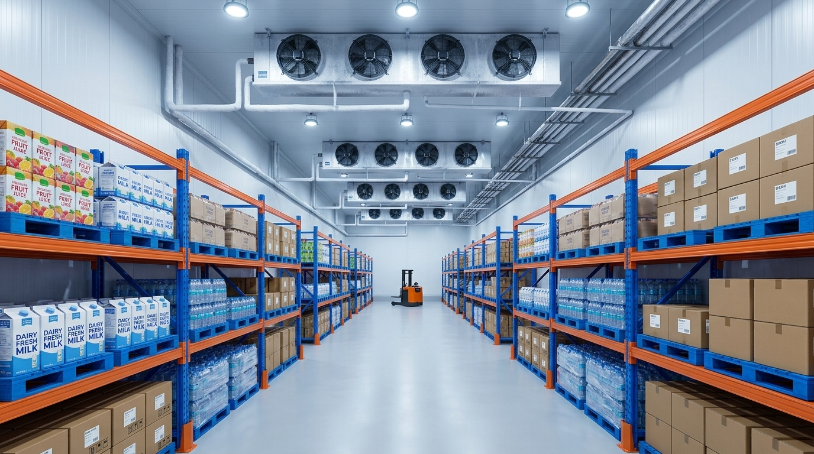
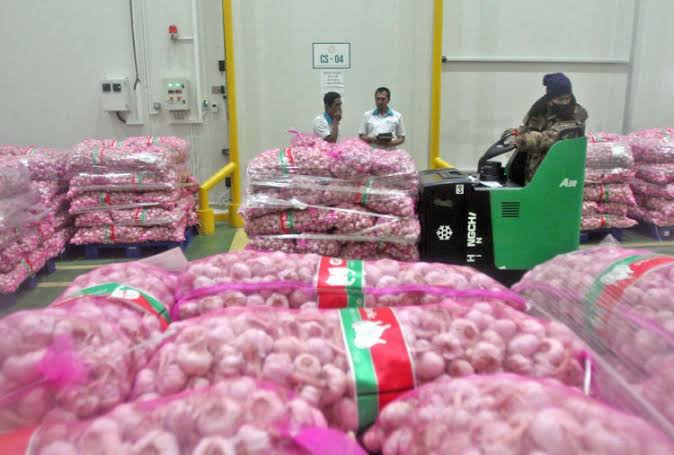

Warehouse Supervisor
PT Makanan Sehat Nusantara (MSN)
Company Overview
PT Makanan Sehat Nusantara (MSN) operates in the food processing industry, specializing in seafood-based products, particularly fish, as well as processed meat products.
The company's operations involve food processing activities where proper raw material handling, inventory control, storage conditions, and product quality management are essential to maintaining operational efficiency.
During my five years with the company, I was responsible for supervising warehouse operations across two main storage facilities: a Dry Warehouse and a Cold Storage Warehouse.
My role involved managing inventory related to food processing operations, coordinating incoming and outgoing materials, monitoring stock movements, maintaining storage organization, and supervising warehouse personnel.
Working in the food processing industry required particular attention to product handling, storage conditions, stock rotation, expiration dates, and inventory accuracy, especially for seafood and meat products that require controlled storage environments.


Warehouse Management Overview
I supervised two warehouse facilities with different storage functions.
Dry Warehouse
Responsible for managing food processing materials, packaging materials, and other products that could be stored under normal warehouse conditions.
Key activities included:
- Receiving and checking incoming materials and supplies.
- Organizing raw materials, packaging materials, and other inventory according to their categories.
- Monitoring stock quantities and inventory movements.
- Maintaining systematic storage locations and warehouse organization.
- Applying FIFO (First In, First Out) stock rotation principles where applicable.
- Monitoring inventory levels and reporting material shortages.
- Maintaining accurate records of incoming and outgoing stock.
Cold Storage Warehouse
Responsible for managing temperature-sensitive inventory, including seafood-based materials, fish products, processed meat, and other items requiring refrigerated or frozen storage.
Key activities included:
- Coordinating the receiving and storage of temperature-sensitive products.
- Monitoring cold storage conditions according to established procedures.
- Ensuring products were stored in designated refrigerated or frozen storage areas.
- Monitoring product identification, quantities, and expiration dates.
- Applying appropriate stock rotation practices.
- Checking product conditions during receiving, storage, and dispatch.
- Coordinating product movements while minimizing unnecessary exposure to unsuitable temperatures.
- Reporting storage or product condition issues that could affect product quality.
Industry-Specific Operational Experience
Working in seafood and processed meat manufacturing provided practical experience in warehouse operations involving perishable and temperature-sensitive inventory.
This environment required consistent attention to:
- Cold chain handling and temperature-controlled storage.
- Seafood and processed meat inventory monitoring.
- Raw material and packaging material management.
- FIFO stock rotation and expiration date monitoring.
- Product condition verification.
- Inventory traceability and accurate stock documentation.
- Coordination between warehouse and food processing operations.
Employment Period & Reason for Leaving
My employment at PT Makanan Sehat Nusantara ended in 2020 during the COVID-19 pandemic, which significantly affected business operations and employment conditions.
As a result of the pandemic's impact, I discontinued my employment with the company in 2020, concluding five years of experience in food processing warehouse operations and inventory management.